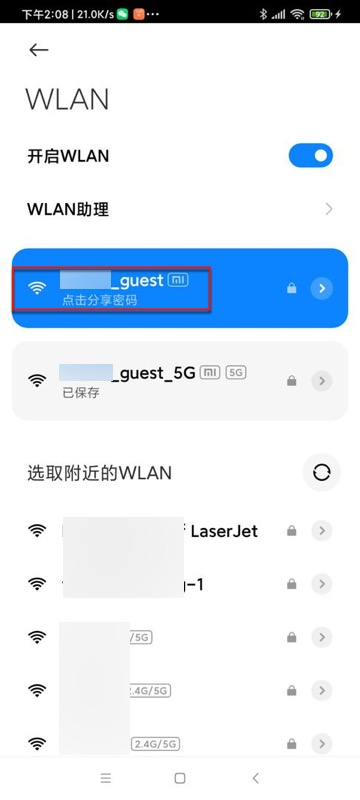
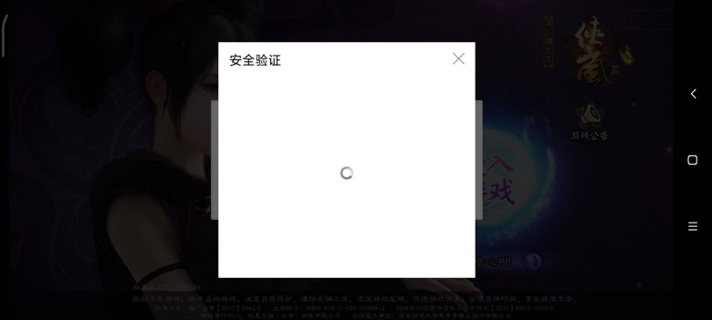

检测到代理显示异常
有些app、网页等，技术做的相对先进，能自动检测是否有代理：
如果检测到有代理
- 会出现警告
- 甚至不显示内容
- 或者显示内容异常
- 等等
对应解决办法：去掉代理
- 比如切换到没有代理的WiFi
- 
- 比如切换到没有代理的WiFi
下面总结一下这些异常情况：
安全警告 该网站的安全证书存在问题
安卓手机中安装了mitmproxy代理后，部分app页面（首次打开）会弹框提示证书问题
比如 安卓中的微信的某些页面，第一次访问某些其他网站时，会提示证书问题：
- 【已解决】自动抓包工具适配iOS：安全警告弹框提示该网站的安全证书存在问题
- vivo应用市场登录后，偶尔也有同样弹框
点击了继续后，后续就不会再提示。
类似问题：
当你Wifi代理有变动，比如：
- 去掉WiFi的mitmproxy的代理后，重新加上
- 换了一个WiFi，重新加上代理
等等情况，则会被视为第一次使用代理，第一次打开页面时，就仍会出现上述弹框提示。同理，点击继续后，之后不会再提示。
显示空白页面或者只显示部分内容
另外，有些安卓游戏，加了代理后，会导致游戏中和安全相关的，尤其是支付相关页面，会无法正常显示内容。
比如空白页面：
或者是 只能显示部分内容：
底部支付方式没显示：
后来经过多次点击，偶尔才能完整显示内容：
网络异常，请检查网络设置
iOS的app 斑马AI课 会提示：
网络异常，请检查网络设置
请检查您当前的网络环境，如果其他App可以正常使用，请到设置-斑马AI课-无线数据中允许斑马AI课访问网络。检查后，点击重试按钮。
无法连接服务器，请退出重试
对于来自华为应用市场的游戏app，在登录时需要先登录华为应用市场。
当华为应用市场检测到有代理时，就会无法显示，报错：
无法连接服务器，请退出重试
解决办法：去掉代理
才能正常加载授权页面：
无法加载，请点击重试
偶尔vivo的支付弹框，也会出现，检测到代理后，无法正常显示，提示：
请检查网络或稍后再试
点击重试
点击一下，即可正常显示：
或者类似的：
加载失败
点击重试
点击一下，即可正常显示支付：
页面卡死在加载中
游戏app发行到vivo应用市场后，登录时往往要登录vivo账号。
其中一种登录弹框时，先显示 滑动补全缺口的图的验证码 的弹框，当vivo发现有代理时，则验证码图片弹框完全就无法显示，且卡死在验证码图片加载页面：

（通过切换WiFi而）去掉代理后，验证码图片才能正常显示：
支付方式弹框不显示，显示等待中
某游戏检测到有了代理后，支付弹框不显示，只提示：正在等待支付
请检查网络后，刷新重试！
小米应用市场发行的游戏登录时也需要登录小米账号授权，检测到代理后，会报错：
请检查网络后，刷新重试！